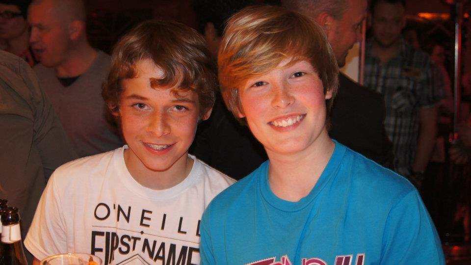
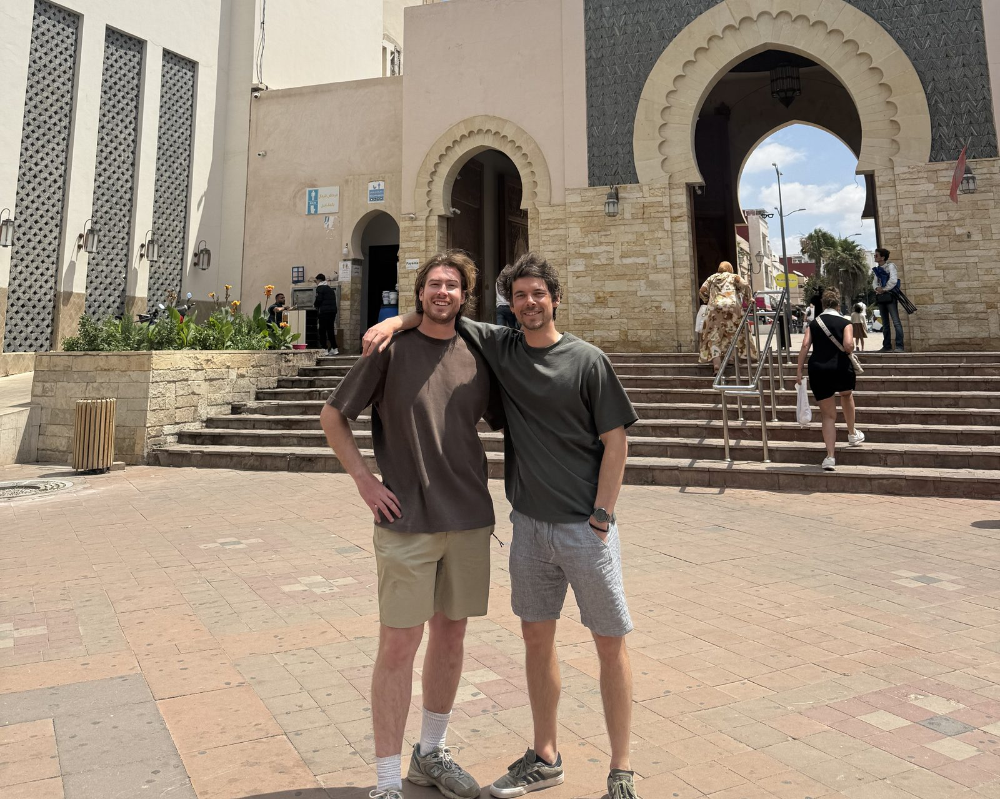

About SurfGoose
The honest friend, told online.
No marketing spin. Just what a spot or stay is really like — by season, for your level — based on recent reviews and people who've actually been there.
Why this exists
Every surf camp's own website tells you the waves are perfect, the food is amazing, the team is the best. Most listing platforms sort by ad-spend, not by truth. As surfers we kept landing in places that looked great on a brochure and turned out to be wrong for the level, wrong for the season, or just not what was promised.
So we started building the version we wished existed: a site that reads recent reviews across multiple platforms, distils what's actually true about a spot or a stay, and labels everything honestly — including what we couldn't verify. The same thing a friend who's been there would tell you over coffee.
The two of us
SurfGoose is built by Lode De Waegenaere and Michiel De Cooman. We grew up together. The idea was born on a surf trip to Morocco — we'd come back from a session wishing the site we'd just booked from had told us the real story about the place we'd ended up at.


We're surfers first, not a booking company. That's the angle: the honest friend who's been there, not the listing platform that takes a cut to put a spot on top.
How we work
Every spot, center and stay on SurfGoose is built on two clearly separated layers:
- The surf — spot & region. Wave type, wind window, water temperature, seasonal pattern. Sourced from surf-data guides and area knowledge — labelled as such, not pretended to come from guest reviews.
- The stay or center — recent reviews. What the host is like, what the food's like, what the gear's like, what the vibe's like, what the weak spots are. Sourced from real guest reviews on Booking, TripAdvisor and the property's own platforms — and we tell you how many recent reviews we read, so you can judge the strength.
The two layers have separate seasonal calendars. Best surf season ≠ best hostel season. We never conflate them.
The 4-year rule
For the experience claims — vibe, hosts, weak spots, what reviewers actually say — we only count reviews from the last 4 years. Older reviews can describe a property that doesn't exist anymore: owners change, gear gets refreshed (or doesn't), atmosphere shifts. A 2013 review describing "brand new" furniture isn't evidence about that property in 2026.
For offerings — services, lessons, gear brands, opening hours, location — we use whatever the property or platform publishes. Those are facts about themselves.
Source-strength labels
Every entry carries one of these labels, so you know how much confidence to place in it:
- 🟢 SOLID — multiple independent recent sources agree. Booking + TripAdvisor + own site all describe the same picture, with reviews from the last 4 years.
- 🟡 MOSTLY SOLID — the picture is real but recent coverage is thin. We rely partly on older reviews or on the property's own description; honest about the gap.
- 🔴 STALE — only older reviews exist (pre-4-year-window). We include the entry because the property is verifiably operating, but tell you the picture is dated and current operation isn't verified.
You'll see those labels on every entry — usually in the "the stay at a glance" or "the center at a glance" panel.
What's live now
We're rolling out slowly to keep the bar high. As of right now:
- Morocco — Tamraght & Taghazout. 17 surf spots, 6 stays. Wave surfing focus.
- Greece — east Crete, around Palekastro. 4 spots, 2 surf centers (Gone Surfing, Freak Surf), 5 stays. Windsurf / wing-foil focus.
- Belgium — the full North Sea coast (De Panne to Knokke) plus the Florizoone put in Deinze. 9 spots, 9 surf centers. Windsurf / kite / wing focus — and the home patch: it's where both of us learned to windsurf.
More countries are queued in the Destinations menu — they'll show "soon" until we've done the same review pass for each. We'd rather have ten countries done properly than fifty half-baked.
Tell us we got it wrong
If something on SurfGoose doesn't match your experience of a place — the host has changed, the gear is different, the spot description is off — let us know. The whole point of this is to keep getting closer to the truth, and surfers who've actually been there are the best source we have.
Contact details will be added here as we settle the right channel. For now this section is a placeholder; the methodology is the part you can act on.
How this stays free for surfers
Some “Book now” buttons on SurfGoose earn us a small commission at no extra cost to you. That’s how we keep the site free for surfers and put the time in to read recent reviews properly.
The rule we keep in stone: we write about every place we can verify with reviews — whether or not we earn anything on it. The affiliate layer sits on top of the editorial, never inside it. If a stay has weak spots, you’ll read about them in the same words whether we earn a commission or not.